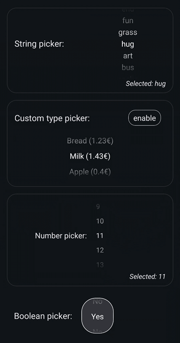

@pluto-whale-studio/repeating-wheel-picker
Readme
A React Native wheel picker that allows endless scrolling through repeating content. Supports custom types for picker data.
Installation
npm install @pluto-whale-studio/repeating-wheel-picker
Usage
import RepeatingWheelPicker, {
type RepeatingWheelPickerProps,
} from "@pluto-whale-studio/repeating-wheel-picker";
// ...
const [, setSelected] = useState<string>();
return (
<RepeatingWheelPicker<string>
setSelected={setSelected}
initialIndex={0}
data={["first", "second", "third"]}
/>
);
Example


 
Contributing
Contributions are currently not intended.